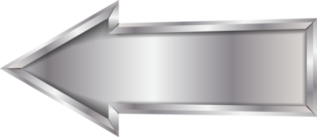
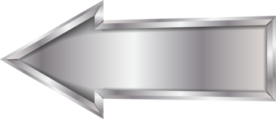

By 1943, the Italians and Germans had been routed in North Africa by British and American forces. Mussolini's administration was overthrown in July 1943 as a result of the Allied invasion of Sicily and Italy, however fighting between the Allies and the Germans in Italy persisted until 1945. A Soviet counteroffensive begun in November 1942 on the Eastern Front put an end to the terrible Battle of Stalingrad, which saw some of the most intense fighting of World War II. The last German forces there surrendered on January 31, 1943, as a result of the approaching cold and diminishing food and medical supplies. The Allies launched a huge invasion of Europe on June 6, 1944, known as "D-Day," and 156,000 British, Canadian, and American forces were deployed on the beaches of Normandy, France. Hitler's response was to send all of his army's remaining power into Western Europe, assuring Germany's loss in the east. While Hitler prepared his forces to push the Americans and British back from Germany in the Battle of the Bulge (December 1944–January 1945), the last significant German offensive of the war, Soviet troops quickly marched into Poland, Czechoslovakia, Hungary, and Romania. Prior to the Allied land invasion of Germany in February 1945, the country was subjected to a heavy aerial bombardment; by the time Germany formally capitulated on May 8, Soviet forces had taken control of most of it. Hitler had commmited suicide by that time and was found dead in his bunker in Berlin.
 
